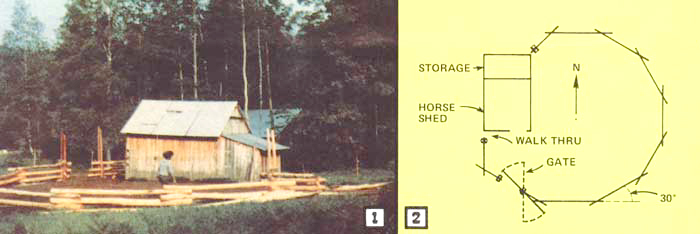
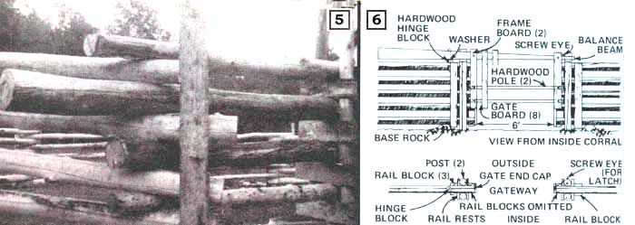
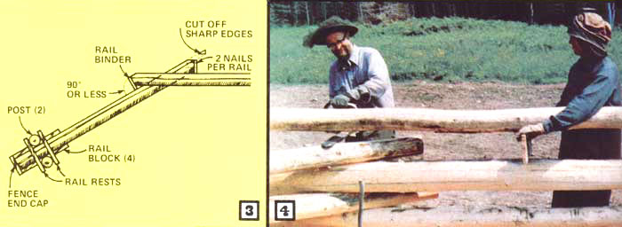
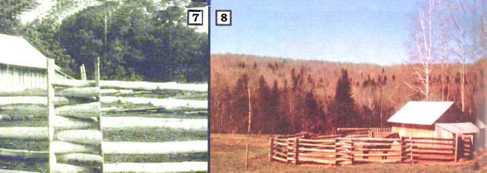

"There may be an easier-to-construct, less expensive, more aesthetic kind of horse corral than the one I chose to build the spring before last," says Stan Flagg of Fort Kent, Maine . . . "but I doubt it!"
Until you've been foiled by a footloose and fetter-free animal who manages-time and again-to work his way through all your fancy fences to go feed his face in greener pastures, you can't appreciate the frustration our wandering gelding used to cause us. We tried using an electric fence . . . and it worked well during the summer, but winter's white blanket insulated the ground so well in the cold months that our usually equable equine quickly forgot the shocks of summer and made a shambles of our setup. Trailing strands of broken wire, he'd casually slog from his private shed to the hay barn, where he'd then spend the night munching and befouling.
I tried various schemes to make the electric fence effective in snow ... but to no avail. Finally-with the score at something like "Horse, 30 . . . Man, 0"?apoplexy became the mother of invention. "There's got to be a better way," I told myself. "I'm going to corral that horse if it's the last thing I do!"
In my search for an answer to our "animal containment" problem, I read George A. Martin's classic Fences, Gates, and Bridges (available for $5.95 from any good bookstore or for $5.95 plus 95 cents shipping and handling from Mother's Bookshelf). After borrowing a few ideas here and there from Martin's book and adding a few twists of my own, I eventually came up with a horse holding design that I felt I and my gelding could both live with: the "zig" corral.
And what's a "zig" corral? Nothing but a zigzag fence minus the "zag" (see accompanying photographs). One advantage to this design is that the use of upright posts set into the ground is kept to a minimum: Our whole corral needed only eight of them. This-of course-all but eliminates any worry of rotting wood and/or frost heave ... and cut down on the amount of time we had to spend digging post holes.
Another reason we chose the "zig" design is that it allowed us to capitalize on the readily available aspen logs we'd already felled in the course of our recent pasture-clearing operation. Thus, our total out-of-pocket costs for the project were essentially nil.
What we like most about our corral, however, is its inherent sturdiness. The enclosure's sides are interlocked in such a way that they could probably safely hold a charging bull ... although, so far, the best we've been able to come up 'with is one ornery horse.
We required the following materials to build a semi-octagonal barrier about 48' in diameter:
[1] thirty-five 6" to 8" X 15'6" peeled poles (for rails)
[2] ten 6" to 8" X 11'6" peeled poles (for rails)
[3] ten 6" to 8" X 8' peeled poles (for rails)
[4] eight 4" (or larger) X 10' peeled cedar or locust posts
[5] eighteen 6" X 6' boards (for rail binders)
[6] thirty-two' 6" to 8" X 24" boards (for rail rests)
[7] two 8" to 10" X 6' boards (for fence end caps)
[8] two 7" X 6' boards (for gate end caps)
[9] fourteen 6" to 8" X 6' boards (for rail blocks)
[10] 600 common wire nails (12d or 3-1/4") galvanized
[11] four 8" spikes.
Skinning the logs was less of a problem than you might think. Here in northern Maine, bark peels neatly off the trees in the month of June (which is when we undertook the construction of our corral). Both before and after this time of year, though, the job seems to take ten times as long. Even if we'd cut our trees during the previous year, then, they'd have been easier to de-bark during the spring.
To strip the logs, I first ran the tip of my chain saw the length of the timbers to slit their bark into 3"- or 4"-wide sections . . . then I skinned the poles with a peeling spud (see MOTHER NO. 40, page 122 for information on how to make one of these de-barking tools). Afterwards, I allowed the slippery rails to dry for a few days before I attempted to handle them again,
While your posts and poles are drying, you can lay out the ground plan of a corral like ours with a tape measure and magnetic compass. We found that an angle of 30' between any two sections of the fence works well. (Also- regardless of how long your logs are-the distance between rail intersections should be at least three feet less than the length of the rails. Or, to say it another way, overlap each joint a minimum of three feet.) Put one or two large, flat rocks on the ground at each intersection point. These foundation stones will hold the lowermost rails high enough off the ground to discourage decay.
Next-at the fence ends and the gate opening-dig pairs of postholes about three feet deep and 6" or 8" apart. (You want them close enough so the cedar fenceposts that go into the holes will hold the rails snugly.) As you can see in Fig. 2, made allowance for an 18" walk-through where the fence meets my shed. To do this, I placed the first pair of postholes about 30" from the outbuilding. (A man can walk through an 18" gap easily, but a horse can't.)
Now set the posts in their holes and place foundation stones between or against them.
Starting at the walk-through, place a log on the first set of base rocks. Check to make sure that the timber protrudes far enough through the end posts so that it leaves less than an 18" gap at the walk-through. (The excess will be trimmed off later.)
OK. Working from the outside of the paddock, lay the small end of the next log on the right end of the first log (assuming you intend to work from left to right, or counterclockwise, around the corral). Move around the corral, setting the left end of each successive rail atop the right end of the preceding one. (Hint: Always keep the small end of each log to your left. The right end of each log should rest on a foundation stone.) Complete the circuit, but leave the gate area empty. (See Figs. 1 and 2.)
You may find it necessary to flatten the contact areas of the poles to keep them from rolling. If so, have a friend hold up the end of the upper rail as you do this (see Fig. 4). Also, as you build the fence higher, try to keep the logs' centers of contact directly above the base rock (or-if anything-tilted slightly toward the center of the corral) and in a straight line. Eyeball accuracy is good enough
Before you begin the second course of rails, nail pairs of rail rests (the 6" X 24" boards mentioned under "Materials" above) between all four sets of double fenceposts at right angles to the rail just below, as shown in Fig. 3 and to the far right of Fig. 5. (Nail additional pairs of the rests to the posts every time a new course of rails is to be put in place.)
Now-starting back at the walk-through-you can begin to lay the second course of rails. Lay the left end of the first log on top of the rail rests you've just installed and work your way around the corral (counterclockwise as before), again keeping the small end of each log to your left.
Continue to add courses in this fashion until the corral is five courses (about five feet) high . . . or however high you want it to go. Don't try to level the rails . . . the finished corral will look better-and be more stable-if you'll just follow the lay of the land.
At this point, your enclosure may seem a little rickety, but don't let that worry you. The purpose of the 6" X 6' rail binders and rail blocks mentioned in the "Materials" section above is to tie the whole structure together so that- in the end -each log is held in place by the weight of the entire corral.
Before you can attach the rail binders, it's necessary to trim the projecting end of each overlong log. To do this, first tack a 6"-long board vertically to one row of protruding rail ends (Fig. 5) to serve as a saw guide ... then run your chain saw down the side of the board to trim the row of logs. (Angle the cut slightly, as shown in Fig. 3.)
Now place a 6" X 6' rail binder flat against the sawed-off ends of the five stacked rails. If the fit is good and snug (some extra work with the chain saw may be necessary), nail the board to the rail ends. Cut off any remaining sharp edges (Fig. 3). Continue to trim rail ends and apply binder boards all the way around the corral.
Next, attach 6" X 6 ' "rail blocks" vertically to the sides of the rails at the fence ends (Figs. 3 and 7). Use the outermost blocks as guides to saw off rail projections. (At the walkthrough, you should trim enough wood from the logs to create an 18" gap between the fence and the shed or obstacle next to it.) Notice (Fig. 6) that at the gate opening, one Tail block is omitted on each side of the opening. Except for this, the gateway is finished in exactly the same manner as the fence ends.
Now nail the fence end caps and gate end caps (items 7 and 8 under "Materials" above) to the corral as shown in Figs. 3 and 6.
Finally, spike the corral's four outer posts to the uppermost row of rails at the fence ends and gateway, using 8"-long spikes.
It's possible, of course, to fit your corral with any of several dozen types of gates (see George A. Martin's book for ideas along this line.) I decided to make a simple balance gate of the type described on pages 137-138 of Martin's Fences, Gates, and Bridges. Figure 6 pretty much tells the story. (Notice that my gate opens into the corral.)
If you decide to go the balance-gate route, don't try to build the whole gate on the ground before hanging it. It's much easier (in my experience) to put the hinge and balance beam up first, and add the rest of the gate (which consists of nothing but a framework of eight or ten boards nailed to a couple of hardwood poles, as shown in Fig. 6) afterwards. If the balance beam isn't exactly straight, be sure to turn it so that it curves upward (for plenty of clearance over the rails).
One other suggestion: You may find it useful-as we have -to leave a 12" gap between the bottom of the gate and the ground, so you can open the gate easily in icy and snowy conditions.
That's all there is to building a "zig" corral. When you're finished you'll have a massive, super-strong, low-cost, maintenance-free structure that's aesthetically pleasing and (more important) very safe for its animal occupants (no sharp corners or protrusions to mangle your heedless horse or clumsy cattle). More important still is the fact that the complete enclosure is-for all intents and purposes -completely unbreachable: Even the most cunning equine (Fig. 8) will be unable to escape the confines of this enclosure
I'm no expert when it comes to fences and corrals, but if there's a better-looking, less expensive, more effective way to put an uppity horse in his place (and keep him there) ... I haven't seen it!
|
 |
 |
 |
|
 |
|
|